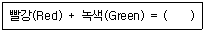
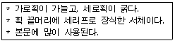

전자출판기능사 (2006-10-01 기출문제)
1과목: 출판론
1. 원고를 작은 화소(pixel)로 분할하여 그 화소의 신호를 시간적으로 순서에 의해 뽑아내는 것을 무엇이라고 하는가?
- 주사(scan)
- 입력(input)
- 스트림(stream)
- 셋업(setup)
(정답률: 40%)

2. 출판기획을 단기, 중기, 장기기획의 3대 유형으로 분류할 때 단기기획의 특성으로 맞지 않는 것은?
- 신속성이 매우 크다.
- 1년 이하의 출판기획 수립을 의미한다.
- 성과 여부가 바로 나타난다.
- 팀원 간의 집약적인 순발력이 요구된다.
(정답률: 37%)
3. 도서 유통에서 POS 시스템의 장점으로 볼 수 없는 것은?
- 점포가 필요로 하는 상품정보를 신속, 정확하게 파악할 수 있다.
- 인기상품을 파악하여 상품진열의 합리화를 기할 수 있다.
- 판매 데이터를 근거로 하여 앞으로의 판매동향을 예측 할 수 있다.
- ISBN의 바코드 심벌을 인쇄할 필요가 없어 번거로움을 줄여준다.
(정답률: 75%)
4. 주로 블랭킷통을 이용하여 간접인쇄를 하는 인쇄방식은?
- 볼록판 인쇄
- 그라비어인쇄
- 오프셋 인쇄
- 스크린인쇄
(정답률: 45%)
5. 서적의 요건으로 적합하지 않은 것은?
- 출판되어 공중이 이용할 수 있어야 한다.
- 일정한 분량이 있어야 한다.
- 어떤 목적을 가진 내용이 있어야 한다.
- 광고의 목적으로 간행되어야 한다.
(정답률: 81%)
6. 컴퓨터그래픽을 응용하여 사진 제판에서 문자, 사진, 도형 등의 합성 및 페이지 레이아웃 기능을 가진 컬러 화상 처리시스템을 무엇이라 하는가?
- CTP
- TEPS
- CEPS
- CPU
(정답률: 69%)
7. 출판기획의 방향으로 가장 바람직하지 않은 것은?
- 좋은 책보다는 주로 많이 팔리는 책에 우선을 두어 보급 성과에 따른 책을 출판한다.
- 세계화 지향을 위해서 영어, 영문표기의 출판물을 개발하고 다양화 한다.
- 전자방식에 의한 매체들을 출판영역으로 적극 끌어들여 출판물을 제작한다.
- 출판 기획시 시대의 현실을 감안하게 기획한다.
(정답률: 75%)
8. 먼셀표색계에서 명도5, 색상5Y, 채도10인 색의 표기법으로 가장 옳은 것은?
- 5/5Y 10
- 5Y 5/10
- 10/5Y 5
- 5 5Y/10
(정답률: 75%)
9. 양장 제책시 책등방식에 해당되지 않는 것은?
- 타이트백(tight back)
- 홀로백(hollow back)
- 클로스백(cloth back)
- 플렉시블 백(flexible back)
(정답률: 37%)
10. 평판인쇄용 PS판의 특징과 관계가 없는 것은?
- 품질이 안정되어 있다.
- 해상력이 우수하다.
- 암반응이 많고 사용유효기간이 길다.
- 제판 설비공정이 간단하다.
(정답률: 58%)
11. 마젠타(Magenta)와 노랑(Yellow)을 감산혼합 했을 때의 색은?
- 흰색(White)
- 녹색(Green)
- 파랑(Blue)
- 빨강(Red)
(정답률: 62%)
12. 다음 중 출판의 기능과 가장 거리가 먼 것은?
- 문화의 분산기능
- 문화의 전달기능
- 문화의 창조기능
- 문화의 보전기능
(정답률: 84%)
13. 어떤 색이 다른 색에 둘러싸여 있을 때, 주변 색과 닮아져 보이는 현상으로 전파(줄눈)효과라고도 하는 것은?
- 동화현상
- 색각효과
- 색순응 효과
- 잔상효과
(정답률: 53%)
14. 등굴림을 한 속장의 책등 모양을 가지런히 하여 귀를 내는 작업을 무엇이라 하는가?
- 배킹
- 쪽맞추기
- 등굳힘
- 고르기
(정답률: 77%)
15. 제책시 책의 표면가공 목적과 관계가 없는 것은?
- 원가절감의 효과
- 습기 방지
- 잉크 퇴색의 방지
- 인쇄면의 내마찰성 증대
(정답률: 80%)
16. 사진제판 작업공정에서 반전작업이란 무엇인가?
- 사진을 완전 흑화 시키는 작업
- 사진에서 불필요한 부분을 제거하는 작업
- 네거티브 필름을 포지티브 필름으로 전환하는 작업
- 사진을 합성하여 새로운 사진으로 만드는 작업
(정답률: 82%)
17. 스크린 인쇄판을 노출한 후 현상할 때 판의 비화선부 일부가 벗겨져 나가는 원인과 거리가 먼 것은?
- 노출부족
- 노출과다
- 감광액이 두껍게 도포
- 불량한 감광액의 사용
(정답률: 65%)
18. 1930년경에 고안된 방식으로 종이를 중첩시켜 보내므로 고속 오프셋 매엽인쇄기에 많이 사용된 급지 방식은?
- 유니버셜 급지
- 스트림 급지
- 회전식 급지
- 텍스터 급지
(정답률: 40%)
19. 다음 가산 혼합법 중 ( )안에 알맞은 색은?

- 노랑(Yellow)
- 파랑(Cyan)
- 마젠타(Magenta)
- 청자(Blue)
(정답률: 36%)
20. 출판기획자 고유의 역할과 가장 거리가 먼 것은?
- 기획 입안한 도서를 제작하여 서점에 보급한다.
- 어떤 독자층을 대상으로 할 것인지 정한다.
- 타사의 유사한 책을 조사 분석한다.
- 도서의 판매, 선전, 영업 전략을 중심으로 광고예산을 짠다.
(정답률: 56%)
2과목: 전자 출판
21. 색상체계에서 디스플레이 되거나 인쇄될 수 있는 색의 범위를 나타내는 단어는?
- 모드(Mode)
- 채널(Channel)
- 채도(saturation)
- 가무트(Gamut)
(정답률: 38%)
22. 종이책 편집이 전산화 작업 공정으로 옳은 것은?
- 전산작업 - 편집교정 - 필름출력 - 저술작업
- 저술작업 - 편집교정 - 필름출력 - 전산작업
- 저술작업 - 전산편집 - 편집교정 - 필름출력
- 필름출력 - 편집교정 - 전산편집 - 저술작업
(정답률: 55%)
23. 전자출판물의 인터페이스(interface)를 설계할 때의 주의 사항으로 옳은 것은?
- 복잡하고 다양한 구조를 갖도록 하여 독자에게 많은 내용이 있는 것처럼 보이게 한다.
- 제작자의 관점에서 설계한다.
- 메뉴의 위치나 아이콘 실행방식은 변화가 많고 다양하게 설계한다.
- 명료한 구조를 갖도록 하여 사용자 입장에서 설계한다.
(정답률: 88%)
24. 전자출판에 있어서 입력장치에 해당되는 것은?
- 프린터
- 플로터
- 스캐너
- 중앙처리장치
(정답률: 85%)
25. PDF로 구현하기에 가장 적절치 않은 매체는?
- 신문
- 잡지
- 단행본
- 영화
(정답률: 82%)
26. 개인이 선택한 시간과 장소에서 정보를 이용할 수 있도록, 다양한 통신방법을 통하여 정보를 제공해 주는 권리는?
- 복제권
- 저작권
- 전송권
- 이용권
(정답률: 42%)
27. 패키지형과 온라인형 전자출판의 공통점으로 볼 수 없는 것은?
- 정보가 디지털 방식으로 저장된다.
- 컴퓨터 매체로 인해 발생한 출판 형태이다.
- 멀티미디어화된 정보를 수록하고 전달할 수 있다.
- 정보 생산자와 수용자간 쌍방향적 교류가 자유롭게 이루어진다.
(정답률: 80%)
28. 편집된 모습 전체가 화면에 나타나지 않을 경우 화면을 이동시키면서 부분적으로 확인 할 수 있는 기능은?
- 텍스트 박스 생성툴
- 스크롤바
- 블록 다이어그램
- 클릭
(정답률: 77%)
29. 다음 중 전자출판물이 아닌 것은?
- CD-ROM
- DVD
- e-book
- CAP
(정답률: 74%)
30. 인터넷 출판의 일반적인 특징이 아닌 것은?
- 전세계적으로 분산된 정보를 공유할 수 있다.
- 정보의 신속한 갱신과 갱신 즉시 배포가 이루어 질 수 있다.
- 정보 유통의 통제가 어렵다.
- 간편한 휴대성으로 전자출판물의 매체로 활용하기 용이하다.
(정답률: 45%)
31. 그림이나 사진을 직접 그려서 입력하는 장치로 그래픽 디자인이나 설계분야에 많이 이용 되고 있는 것은?
- 디지타이저
- 스캐너
- 광학판독기
- 플로터
(정답률: 50%)
32. 다음 중 모니터 해상도를 나타내는 단위는?
- Pixel
- Lpi
- rpm
- CCD
(정답률: 72%)
33. 디지털 출판환경이 출판 산업에 미치고 있는 영향에 대한 설명으로 틀린 것은?
- 출판 산업이 컨텐츠롤 매개로 하는 정보 산업으로 변신하고 있다.
- 복잡한 디지털 환경으로 출판의 비효율성을 낳고 있다.
- 출판 컨텐츠의 부가가치가 극대화 되고 있다.
- 소프트웨어 업체와 출판사간의 전략적 제휴가 늘어나고 있다.
(정답률: 86%)
34. 전자출판 응용프로그램 중에서 Director, tool book, Author ware와 같은 프로그램의 주된 용도는?
- 사운드 파일 제작 프로그램
- 이미지 처리 프로그램
- CD-ROM저작도구
- DTP소프트웨어
(정답률: 38%)
35. DTP(Desk Top Publishing)에 대하여 가장 옳게 설명한 것은?
- 원고의 작성, 교정, 인쇄용 필름의 출력까지 컴퓨터를 이용하는 것을 말한다.
- 원고의 작성과 교정은 컴퓨터로 하고 인화지로 출력하는 것을 말한다.
- 원고의 작성은 컴퓨터로 하고 대지작업을 거쳐 오프셋 인쇄를 하는 것을 말한다.
- 원고의 교정은 컴퓨터로 하고 인화지를 대지에 배치하여 인쇄하는 것을 말한다.
(정답률: 79%)
36. 전자출판의 특성으로 틀린 것은?
- 종이책에 비해 문자와 그림의 표현, 내용의 보관성, 휴대성, 검색이 용이하다.
- 소리와 동영상 및 애니메이션 등이 쉽게 제공된다.
- 정보를 독해할 수 있는 장치가 필요치 않아 휴대가 용이하다.
- 저장매체의 부분적인 손상으로 인하여 전체 내용을 확인할 수 없는 단점도 있다.
(정답률: 84%)
37. 인터넷 하이퍼텍스트는 주로 무엇과 무엇으로 이루어져 있는가?
- HTTP와 HTML
- HTML과 TML
- TEXT와 image
- LINK와 NODE
(정답률: 68%)
38. 온라인 전자출판에 대한 설명으로 틀린 것은?
- 온라인 출판은 만들어져서 배포하기까지의 시간이 너무 길다.
- 출판물을 보관하기 위해 많은 공간이 필요 없다.
- 검색이 용이하므로 독자는 필요한 내용만을 골라 읽을 수 있다.
- 책의 내용이 편집된 순간 인쇄과정과 인쇄물의 유통과정을 거칠 필요가 없다.
(정답률: 86%)
39. 교정자가 갖추어야 할 요건 중 옳지 않은 것은?
- 원고에 충실해야 한다.
- 치밀, 정확해야 하며 교정쇄를 깨끗이 다룬다.
- 유명한 저장의 글은 틀림이 없다라고 생각한다.
- 모든 정신을 교정에 집중 시켜야 한다.
(정답률: 82%)
40. 키보드나 마우스를 사용하여 메뉴나 아이콘의 선택하면 그것이 수행되는 직관적 사용자 인터페이스 방식을 무엇이라고 하는가?
- GUI
- CAD
- FTP
- ISSN
(정답률: 81%)
3과목: 전산 편집
41. 인쇄물의 선수를 결정하는 요인으로 볼 수 없는 것은?
- 인쇄의 목적
- 잉크색의 종류
- 피인쇄체의 종류
- 원고의 종류
(정답률: 45%)
42. 면지에 대한 설명으로 옳은 것은?
- 양장 제책에 있어서 속장의 위아래 양쪽에 붙인 천을 말한다.
- 책의 속장과 표지를 연결하는 부분으로 표지의 안쪽에 붙이는 종이를 말한다.
- 책의 발행, 연월일, 출판사의 주소, 등록번호, 정가 등 출판에 관한사항이 인쇄된 면을 말한다.
- 서적명, 내용의 간단한 소개 등을 인쇄하여 광고의 효과를 거두기 위한 종이다.
(정답률: 75%)
43. 변형폰트 중 높이(세로)보다 폭이(가로) 좁은 서체의 형태는?
- 정체
- 장체
- 평체
- 고딕체
(정답률: 59%)
44. 우리나라에서 출판물에 많이 사용되는 국전지의 크기는?
- 636*939mm
- 693*989mm
- 755*1⑤1mm
- 788*1091mm
(정답률: 39%)
45. 그림의 구성에서 강조기법은 시각적 우선순위가 매우 중요한데 다음 설명 중 옳은 것은?
- 작은 그림은 큰 그림이나 굵은 글씨보다 더 강조되고 시선이 우선한다.
- 흐린 색은 진한 색보다 더 강조되고 시선이 우선된다.
- 어두운 사진은 밝은 사진보다 더 강조되고 시선이 우선한다.
- 색 파장이 긴 적색은 짧은 파장 청색보다 더 강조되고 시선이 우선된다.
(정답률: 75%)
46. 인쇄물을 스캔한 이미지는 화면의 화소를 변환하는 과정에서 규칙적인 격자 모양의 선이 나타나 인쇄의질을 떨어뜨리는 원인이 되는데 이미지 편집 프로그램에서 이러한 망점을 방지할 수 있는 필터는?
- 크로핑(cropping)
- 디스페클(despeckle)
- 캔버스(canvas)
- 샤픈(sharpen)
(정답률: 66%)
47. 다음은 어떤 서체에 대한 설명인가?

- 명조체
- 고딕체
- 그래픽체
- 샘물체
(정답률: 68%)
48. 일반적인 접지와 신문의 다른 점에 대한 설명으로 옳은 것은?
- 신문은 접는 형식인데 비해, 접지는 제책(binding)형식을 취한다.
- 신문의 내용은 접지보다 다양하고 상세하다.
- 신문의 판형은 잡지와 같거나 소형이다.
- 신문의 발행주기는 잡지보다 대체로 길다.
(정답률: 86%)
49. 사진트리밍(trimming)을 할 때 가장 좋지 못한 방법은?
- 대각선을 그어서 확대할 때는 크게 확대되는 변을, 축소할 때는 덜 축소되는 변을 기준으로 하여 확대와 축소 비율을 계산한다.
- 트리밍을 위해서는 사진 원본을 오리거나 떼어 낸 다음 사진위에 불투명지를 씌워서 축소, 확대될 영역을 펜으로 표시한다.
- 나란히 구성되는 동격의 사진이 주제의 크기가 다를 경우에 작은 쪽의 주제를 확대하여 균형을 잡는다.
- 종사진과 횡사진을 효과적으로 구성하기 위해서는 미리 사지기자에게 러프 스케치(Rough Sketch)를 제시하는 것이 좋다.
(정답률: 61%)
50. 글자의 크기 중 미국 1포인트(pt)의 크기는 어느 정도인가?
- 0.35mm
- 0.45mm
- 0.65mm
- 0.75mm
(정답률: 69%)
51. 레이아웃 형태 중 일반적으로 좌우가 중심축으로 똑같은 모양으로 하고 있는 대칭형의 상태를 말하는 것은?
- 애시미트리
- 시미트리
- 글로스
- 놈보르
(정답률: 67%)
52. 책표지 디자인에서 쪽수, 인쇄용지의 지질, 두께에 따라 사이즈가 가장 많이 달라지는 부분은?
- 판면
- 책등
- 상하좌우여백
- 해상도
(정답률: 71%)
53. 단행본, 잡지 등의 출판물에 텍스트, 이미지, 일러스트레이션 등의 구성요소를 적절히 배치시키는 작업은?
- 셋업
- 레이아웃
- 교정
- 포맷팅
(정답률: 78%)
54. 다색원고에 대한 설명 중 옳지 않은 것은?
- 컬러 그림을 인쇄하기 위해서 CMYK와 RGB 두 가지 방식 모두 출력해야 한다.
- 다색 원고는 보통 2색 이상의 원고를 말한다.
- 단색 원고에서 1색을 추가할 때마다 제판비는 물론 인쇄비가 증가한다.
- 보통 4색으로 인쇄를 하기 위해서는 컬러스캐너로 사진원고를 원색 분해한다.
(정답률: 86%)
55. 일반적인 교정업무에 해당되지 않는 것은?
- 문자교정
- 사진교정
- 컬러교정
- 제책교정
(정답률: 69%)
56. 문자의 지정에 대한 설명으로 옳지 않은 것은?
- 사진을 설명하는 글자는 본문이나 제목보다 크게 설정하는 것이 좋다.
- 유아나 노인층을 대상으로 하는 책에는 서체를 크게 하고 행간은 넓게 한다.
- 본문 서체는 제목 등의 서체와 구분되는 것이 좋으며 명조계통을 쓰는 것이 무나한다.
- 독자의 이해를 돕기 위해 주석이나 일러두기는 본문 글자보다 적게 하는 것이 보통이다.
(정답률: 77%)
57. 글자의 크기에 대한 대비 구성에서 본문에 대한 제목의 점프율(jump)에 대한 설명으로 가장 옳은 것은?
- 점프율이 120%보다 작을수록 젊은이 취향이다.
- 점프율이 개인적인 취향이기 때문에 구성의 원리로는 별 의미가 없다.
- 점프율이 120% 보다 클수록 동적, 감성적 분위기의 표현이 된다.
- 점프율이 120% 보다 클수록 차분한 분위기의 표현이 된다.
(정답률: 71%)
58. 다음 중 확대 축소 비율이 대체로 자유롭고 가장 풍부한 색상 표현이 가능한 그림(Image) 원고는?
- 인쇄물
- 인화지
- 슬라이드 필름
- 레이저 프린트물
(정답률: 54%)
59. 포스트스크립 언어에서 사용되는 그래픽 파일 형식으로 바이너리 또는 아스키 형식으로 저장되는 비트맵 이미지 파일은?
- EPS
- TIFF
- DCS
- GIF
(정답률: 36%)
60. 본문의 주목 효과를 높이기 위해 첫 글자를 크게 하는 것을 무엇이라고 하는가?
- 헤드라인
- 이니셜
- 리드
- 놈보르
(정답률: 60%)